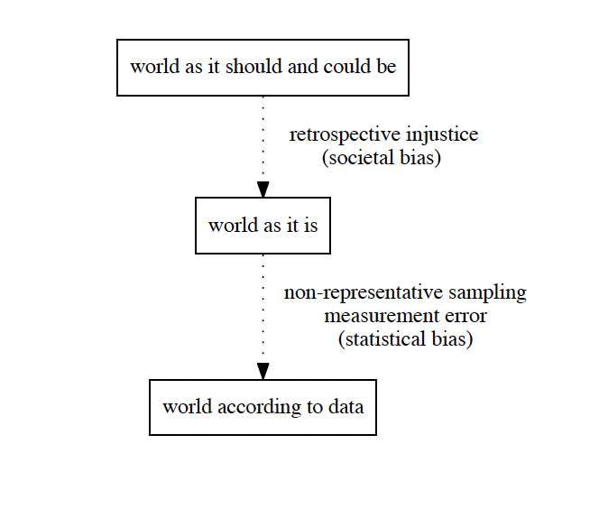

This blogpost was originally released through the Good Data Institute (GDI), where I work as a Fellow to to give not-for-profits access to data analytics support & tools for social and environmental good. If you’d like to learn more about GDI, check their website here.
Data Science has come to permeate almost every aspect of our society. Machine Learning and Artificial Intelligence (AI/ML) algorithms are being deployed at scale to facilitate our daily lives. Whether it’s filtering our spam emails, giving us directions, or nudging what we watch on streaming platforms, this technology has integrated seamlessly with our digital lives. These algorithms are also present in pivotal aspects of our lives, for example, by deciding whether we’ll be short-listed for an interview, or whether our bank loan will be approved. Meanwhile, in the public sector, algorithms are becoming more critical for decision-makers in both the policy and legal spheres.
Over the last 50 years, Hollywood has painted a picture of a long-term AI apocalypse where civilisation would be destroyed by killer robots. However, the last decade has revealed a more sneaky reality: even today, AI/ML is creating harm in our society and it has the potential to further scale up injustice and unfairness.
This post is the first part of a series about Ethics and Data Science. In this part, I will discuss the current picture mentioned above by describing the challenges present, outlining some examples of harmful AI/ML algorithms and discussing how this harm stems from the root. More importantly, I will propose some actionable items that organisations and data practitioners can take to leverage a fair use of data. Whether you are a data professional or simply interested in this topic, I hope to convince you of the importance of ethical practices in Data Science.
Challenges
Despite Hollywood’s post-apocalyptic depiction of AI, I don’t think AI/ML algorithms are inherently evil. They are powerful tools that can be used for the benefit or detriment of our society. So how could they become harmful at all? One of the main issues we face is that these algorithms learn behaviour from data about how the world is, instead of how the world should be. To clarify this point, let’s consider the following quote [3]:
Statistical and machine learning models are designed to identify patterns in the data used to train them. As such, they will reproduce, to the extent that they are predictive, unfair patterns encoded in the data or unfairness in the problem formulation described above.
That is, these algorithms have the power to amplify whatever is present in the data that the algorithm is trained on. If there are unfair or biased patterns in the data, these will be reflected in the output of the algorithm. The challenge is that by default, the data used as input in these algorithms is biased towards unfairness and underrepresentation. The concept of bias is useful as it can help us understand under what circumstances these AI/ML algorithms become unfair. But how does this harm originate in the first place and what exactly do I mean by bias?
Bias in Data Science
In the context of this series, bias relates to outcomes of AI/ML algorithms that favour subsets of the population based on a human factor (age, gender, disability, ethnicity, ….). At the most general level, one can think of two main sources of bias related to Data Science:
-
Statistical Bias: The systematic discrepancy between the data used to train an AI/ML algorithm and the world as it is. This type of bias normally occurs when the training data is not representative of the full population [3]. For example, a study found that most off-the-shelf Computer Vision (CV) algorithms are trained with oversampled white facial images because the data was mostly collected in Western Countries [6].
-
Societal Bias: The ensemble of non-statistical social structures that make fair decision-making by a model more difficult or even impossible. For example, even if we could measure crime 100% accurately, there might be a normative bias due to an unjust policing system even if there’s no statistical bias.

Addressing issues of societal bias may require adjusting data collection processes, or unfortunately may not have a technical solution at all. Moreover, these two types of biases overlap with each other. For example, societal bias might affect the definition of how crime is defined, thus introducing statistical bias. In this series, I will mainly be focusing on statistical bias, as I think it’s easier to tackle algorithmically for individual data practitioners developing AI/ML products. However, because of the interconnectedness between societal and statistical bias, societal bias will naturally creep in throughout the series. For the interested reader, there have been some proposals in the literature to directly tackle societal bias in Data Science, for instance by embracing the notion of Intersectionalism (you can read more in this paper [2]).*
Recognising these biases requires a retrospective understanding of how systematic injustice has manifested and developed in many domains over time. To leverage fair AI/ML products, professionals will benefit from upskilling in non-technical areas. For example, critical race theory will help practitioners understand the systematic underrepresentation of marginal groups in datasets. However, having to upskill in non-technical aspects of fairness will make many uncomfortable. I don’t mean morally uncomfortable (at least I would hope so), but in a constantly evolving tech-world where professionals have to constantly learn new tools and frameworks to keep up with industry, having to upskill in something outside of their domain of expertise will add more pressure to individuals as well as excuses for organisations to not develop AI/ML algorithms fairly. This is where organisations need to support individuals with the resources and encouragement to upskill in these non-technical areas. All organisations (whether big or small), should strive to make Data Ethics the norm and not a ‘would be nice’.
Productionisation of AI/ML: ‘The Golden Era’ or the ‘Wild West’?
In the last decade we’ve seen an explosion of harmful examples of AI/ML algorithms. However, these algorithms have been around for a lot longer in academia and industry research. For example, OXO was released in 1952 as the first algorithm that could play the perfect game of tic-tac-toe. More triumphantly, in 1997 IBM’s Deep Blue algorithm beat the world chess champion. So what has gone wrong in the last few years? In my opinion, the productionisation of AI/ML by market forces has accelerated the harm AI/ML algorithms pose to our society. But what exactly do I mean by productionisation of AI/ML?
Both executives and investors are celebrating the ‘Golden Era of AI’, pouring millions into the development of AI/ML algorithms to derive profit while making their business success reliant on this technology. A survey of 1000 U.S. senior executives found that ‘93% of respondents say that emerging technologies, including deep learning, machine learning, and artificial intelligence, help their businesses be more competitive’.
By now, there’s no doubt that AI/ML has immense potential to create business value. It’s no coincidence that the most successful tech companies are embedding AI/ML in the core of their products (think of Netflix, Spotify, Youtube, Amazon, …). However, when hearing business professionals talk of the ‘Golden Era of AI’ and its opportunities, I find it hard not to think of the Californian ‘Gold Rush’ in the 19th century. Historically, gold turned this land into the ‘Wild West’, and amongst other things, it led to the mass massacre and displacement of Native Americans in the area. While AI/ML has not got to that stage yet, the ‘AI/ML Rush’ is much more scalable and present in our society than gold mining. It’s also not short of harmful examples even today.
For instance, in 2015 the Google Photos app mistakenly labeled African American people as ‘Gorillas’. More recently, OpenAI released DALL-E 2, an AI/ML algorithm that takes written text as input and generates an image from scratch. When instructed to produce images for trades that are stereotypically based on gender or race, DALL-E generates racial and gender-biased images. While OpenAI acknowledged this bias in their release statement, I don’t think acknowledgment leads to justification in this case. If you don’t think that’s enough examples, you can find more real-life examples of biased AI/ML products in this article.
By this point, you might argue that all these examples might have offended subsets of the population, but have not caused ‘real harm’ to anyone. However, considering the influence of AI/ML in the legal system might change your opinion. For example, a software company called Equivant developed COMPAS, an AI/ML algorithm that uses data from previous offenders to predict the risk of recidivism (re-offending). After it had been deployed in production, this algorithm has been shown to suffer from both gender and racial bias. That is, COMPAS is more likely to tag black people and males as high-risk than white people and females respectively.
Just like in the Hollywood depiction of the ‘Wild West’, it’s become a common practice for AI/ML organisations and data professionals to ‘shoot first and ask questions later’. Personally, I would be dubious of any AI/ML advocate who hails the ‘Golden Era of AI’ without acknowledging all the potential harms associated with AI/ML products.
Opportunities
We’ve learned that data practitioners and organisations face challenges to leverage AI/ML products ethically. Given the lay of the land I’ve outlined above, there are many opportunities for organisations to leverage a fair use of data. The good news is that even smaller organisations have the potential to become champions in this space and lead the way.
How can organisations leverage ethical practices around Data Science?
Over the last years, we’ve seen many tech organisations come up with codes of conduct or set of principles for ethical data science (e.g. Microsoft, Google, IBM or Intel). More recently, these codes of conduct are becoming more tokenistic as we’ve seen companies being involved in AI/ML scandals even when their code of conduct was being ‘followed’. Here’s a list of actionable steps that organisations can use to mitigate the potential harms of AI/ML products:
-
Make your organisation accountable: Having an ethical code of conduct is (or should be) a statement of intent for wanting to leverage data science ethically. However, at the end of the day, intent is not nearly as important as outcome and results [4] (p.100-110). Therefore, organisations need to make themselves explicitly accountable when they deploy biased AI/ML products. ‘Faking ethics’ should be regarded as detrimental as faking data or results [8], and hopefully the legal system will leverage this accountability too.
-
Understand the trade-offs: Developing AI/ML products comes at a cost. For example, what should organisations do when there’s no available data from a given population sub-group, thus leading to statistical bias? One can spend more resources collecting an even number of representative data samples or tackle this challenge with algorithmic tools (e.g. data augmentation in Computer Vision). However, these methods are time- and resource-consuming, and as such organisations must be willing to pay the price of fairness, remembering that ‘minimising the error fits majority groups’ [1].
-
Strive for diversity across your organisation: Whether they realise or not, developer teams will be more susceptible to societal bias if all members come from a specific demographic (regardless of team members’ character and political alignments). Ensuring that all teams in your organisation are diverse across demographic factors (e.g. ethnicity, gender and disabilities) is crucial to flag and mitigate bias througout the AI/ML product lifecycle. In line with the item above, this very often comes at a cost (especially in recruitment), so organisations ought to be willing to pay the cost if they are committed to AI/ML fairness.
-
Auditability is not everything: Over the last years, there’s been more talk about the audibility of AI/ML products. The goal of auditability is to clearly document when decisions are made and, if necessary, backtrack to an earlier dataset and address the issue at the root. While good documentation and data lineage can be useful in this regard, auditability alone cannot guarantee an ethical use of data.
-
Context is crucial: AI/ML products are not developed and deployed into echo chambers. They are complex constructs created by humans whose outcomes affect a very large part of society. Therefore, having an understanding of the context surrounding an AI/ML algorithm is crucial for Fair Machine Learning. This affects every stage of the AI/ML product lifecycle: from data acquisition to cleaning, to interpretation of findings, and dissemination of the results. To minimise the chance of disregarding context, here are some questions you and your team can ask during development and deployment of AI/ML products [3], [8]:
-
What’s the training dataset? How was it curated?
-
What are the potential sources of societal and statistical bias?
-
What’s the subset of the population that will be affected by the algorithm? Did they agree to be involved in the algorithm’s output?
-
How will the deployed algorithm lead to decision-making?
-
How are the stakeholders involved in the product? Does that affect the algorithm’s architecture?
-
-
Enable and encourage debates around fair use of data: These conversations should be a topic that it’s discussed widely in the organisation. It cannot be something that only a couple data scientists in the organisation think about. Organisations thus have the responsibility to create a culture of psychological safety, where people feel comfortable speaking their own mind. This means debating and challenging what fair use of data entails, even if that’s at odds with the organisation’s financial interest.
Conclusions & Next Steps
In this article, I hope I have convinced you of the risk that near- and mid-term productionisation of AI/ML can pose to society. We learned some examples of current AI/ML products that misclassify humans based on gender, ethnicity and socioeconomic status. We also learned that Data Ethics is a complex challenge because it encompasses both social, moral and technological areas.
One of the greatest challenges in this topic is that organisations and individuals will develop and deploy biased AI/ML, many times even without realising because of statistical and societal bias. Organisations need to understand that ‘fairness is not one-size-fits-all’ [7] and to mitigate the risk of harmful AI/ML, I proposed some actionable steps that organisations and data practitioners can take. For example, organisations need to enable and encourage debates around the fair use of data, as well as make themselves accountable when they deploy harmful or unethical AI/ML algorithms. For data practitioners specifically, asking meaningful questions will help them understand the context around the human aspect of the data. Because of the many moving components of AI/ML algorithms (both in development and deployment), interpreting context ethically is one of the main challenges that data practitioners will have to face if they aspire to be moral professionals. Whether it is you or your organisation, by ignoring Data Ethics concerns you’re already making a choice, you’re just not aware of it.
Another challenge for data practitioners is to understand how the potential roots of harm can appear as inputs in AI/ML algorithms, and from there architect these algorithms so that they produce fair outcomes instead of unfair ones. By collaborating with charities, at the Good Data Institute (GDI) we spend most of our time trying to showcase to the world how the power of Data Science can be used for social and environmental good.
In the next part of this series, I’ll delve deeper into how we can algorithmically define a sense of fairness to hopefully program it into AI/ML algorithms. This will be a more technical endeavour that will lead me to introduce field Fair Machine Learning (FML). This turns out to be a very difficult task, but in a nutshell, FML aims to address statistical and societal bias by ensuring that the output of AI/ML algorithms doesn’t depend on sensitive inputs in a way that’s considered ‘unfair’. Examples of sensitive inputs include gender, ethnicity, socio-economic status, disability, or sexual orientation [5].
- Statistical and structural biases can also be framed at different levels of perspective. For the interested reader, I recommend reading this article for a discussion of how different biases arise throughout the AI/ML product lifecycle.
Academic References
[1] Chouldechova, A. (2016). Fair prediction with disparate impact: A study of bias in recidivism prediction instruments. arXiv e-prints. https://arxiv.org/abs/1610.07524
[2] Davis, J. L., Williams, A., & Yang, M. W. (2021). Algorithmic reparation. Big Data & Society, 8(2). https://doi.org/10.1177/20539517211044808
[3] Mitchell, S., Potash, E., Barocas, S., D’Amour, A., & Lum, K. (2018). Prediction-Based Decisions and Fairness: A Catalogue of Choices, Assumptions, and Definitions. arXiv e-prints. https://arxiv.org/abs/1811.07867
[4] Noble, S. U. (2018). Algorithms of Oppression: How Search Engines Reinforce Racism. New York University Press.
[5] Oneto, L., & Chiappa, S. (2020). Fairness in Machine Learning. arXiv e-prints. https://arxiv.org/abs/2012.15816
[6] Shankar, S., Halpern, Y., Breck, E., Atwood, J., Wilson, J., & Sculley, D. (2018). No Classification without Representation: Assessing Geodiversity Issues in Open Data Sets for the Developing World. arXiv e-prints. https://arxiv.org/abs/1811.07867
[7] Suresh, H., & Guttag, J. (2019). A Framework for Understanding Sources of Harm throughout the Machine Learning Life Cycle. arXiv e-prints}. https://arxiv.org/abs/1901.10002
[8] Zook, M., Barocas, S., Boyd, D., Crawford, K., & Keller, E. (2017). Ten simple rules for responsible big data research. PLOS Computational Biology, 13(3). https://doi.org/10.1371/journal.pcbi.1005399